Descendez pour découvrir la présentation de la Map!▾
MIRA HQ est la seconde Map d'Among Us. Cette map possède 14 salles, elle est située dans une gigantesque tour, côtoyant les nuages, qui est en fait le siège de la société MIRA, il n'y a donc aucun passage en extérieur. Au début d'une partie, tous les joueurs commencent au même point de spawn le Launchpad. Dans cette pièce on identifie l'arrière du vaisseau qui a permis de transporter l'équipage de The Skeld jusqu'ici. Cette map dispose d'une table d'admin mais contrairement à The Skeld et Polus elle ne dispose pas d'une salle de caméra. Les Imposteurs contrairement au deux autres map n’ont pas à disposition la fermeture des portes. Mais d’autres sabotages sont à disposition: éteindre l'O2, saboter le réacteur, utiliser le bureau pour éteindre les lumières, et saboter les communications.(voir plus dans les salles ayant un sabotage.)
Quêtes !
Ce qui suit est une liste de toutes les quêtes présentes sur Mira Hq, salles par salles.
Vous pouvez aussi accéder à chaque salle en cliquant dessus sur la carte ci-dessus.
Quêtes dans Cafeteria:
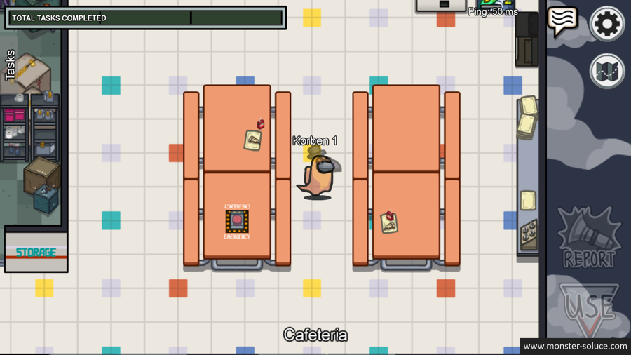
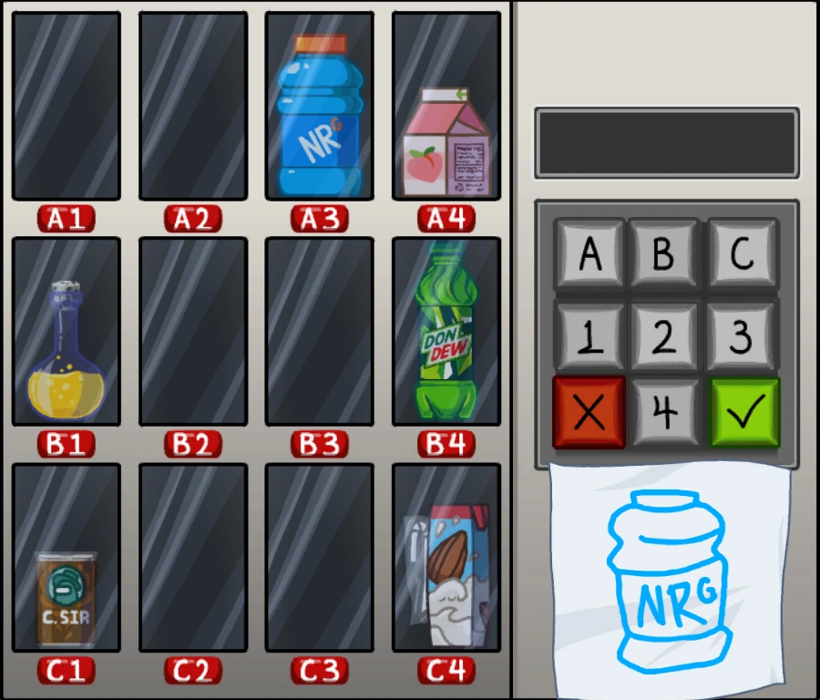
Le Distributeur
Dans cette quête, vous allez devoir cliquez sur le distributeur automatique au fond de la salle. Il y aura un dessin griffonné de la boisson à acheter; trouvez-le et entrez le bon code.

Les Poubelles
Dans cette quête, vous allez devoir tirer un levier vers le bas le temps que les déchets soient évacués. Effectuez cette quête une première fois puis rendez vous à Storage pour pouvoir évacuer les déchets une seconde fois et enfin terminer cette quête, ce qui fera avancer la barre de complétion des quêtes.

Emergency Meeting
Le bouton d'Emergency permet à un joueur d'arrêter la partie pour lancer une discussion et un vote d'élimination comme si un corps avait été trouvé. Utilisez ce bouton lorsque vous avez des suspitions fondées! (par exemple, si vous avez vu un autre joueur utiliser une vent, courez vers le bouton et dénoncez le aux autres!!). Attention! Ce bouton ne peut être utilisé qu'UNE seule fois par personne!
Lorsque vous êtes imposteur, si vous pensez que quelqu'un a trop de doutes sur vous, faites attention a ce bouton pour éviter qu'un joueur n'appuie dessus pour vous incriminer!
Quêtes dans Launchpad:
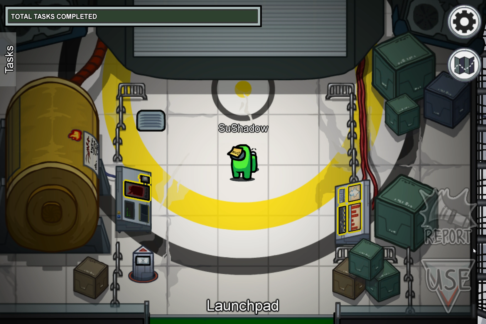

L'Essence
Cette quête s'effectue en 4 parties. D'abord, remplissez votre bidon dans storage, puis allez le videz dans le réservoir à Upper_Engine. Allez ensuite reremplir votre bidon à storage pour le vider dans le réservoir à Lower_Engine. Lorsque les 2 réservoirs sont remplis, la quête est réussie et la barre de complétion des quêtes avance.

Le Courant
Tout ce que vous avez à faire est d'actionner l'interrupteur en surbrillance, de le maintenir enfoncé et de le faire glisser vers le haut.
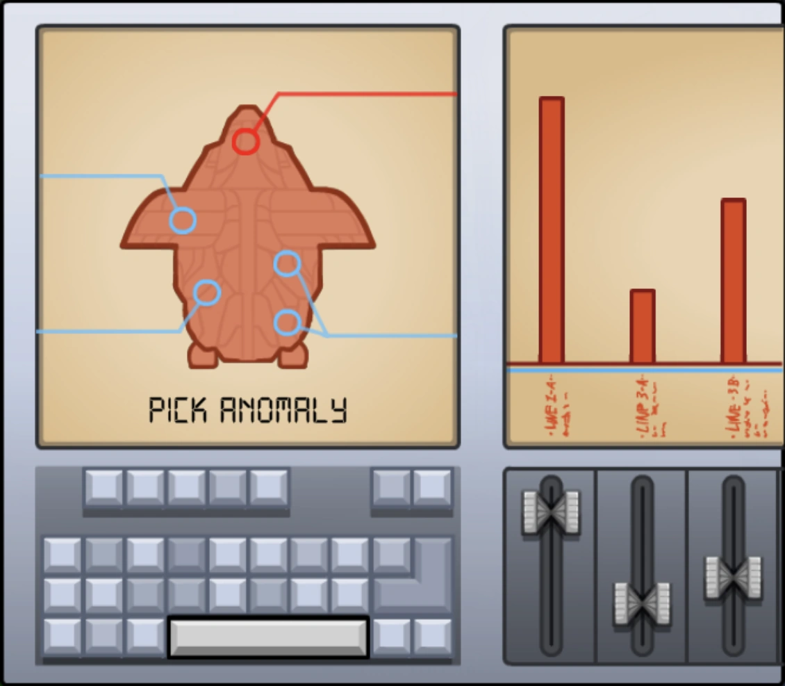
Le Diagnostic
Interagissez simplement avec le panneau et cliquez sur la barre d'espace pour commencer à exécuter les diagnostics. Après 90 secondes, vous devez revenir au panneau et cliquer sur l'anomalie, représentée par le cercle rouge.
Quêtes dans Storage:
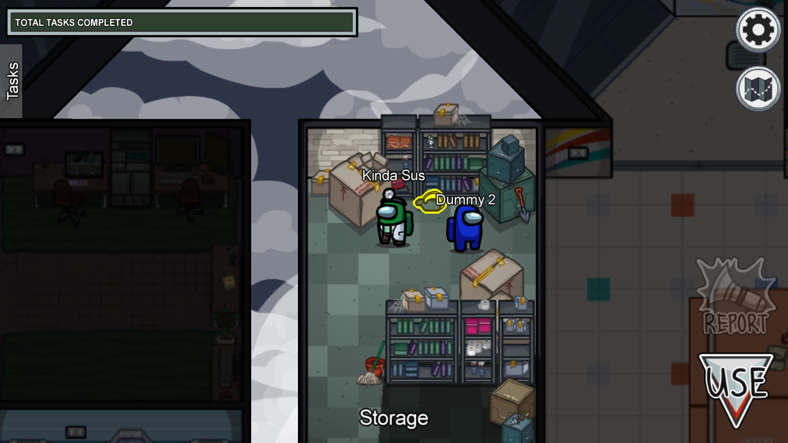
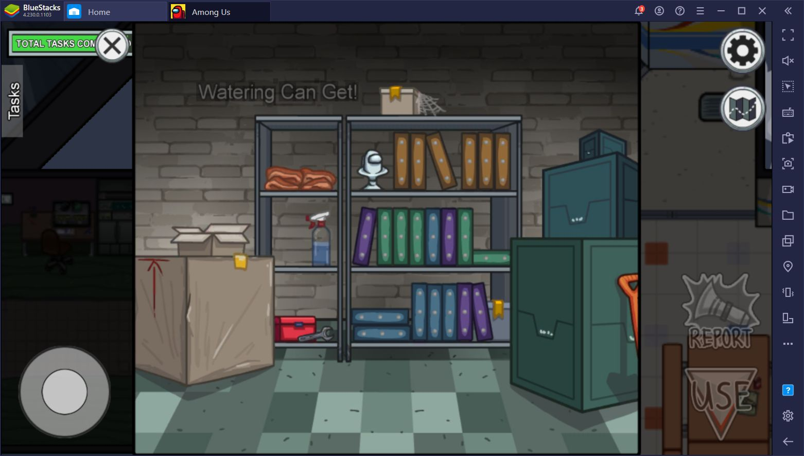
L'Étagères
Cette tâche s’effectue en deux temps. Vous devez d’abord vous rendre dans la salle Storage et interagir avec les étagères au fond. Sur l’écran qui s’affiche, cliquez sur l’arrosoir et prenez-le. Ensuite, dirigez-vous vers la salle Greenhouse.
Quêtes dans Greenhouse:
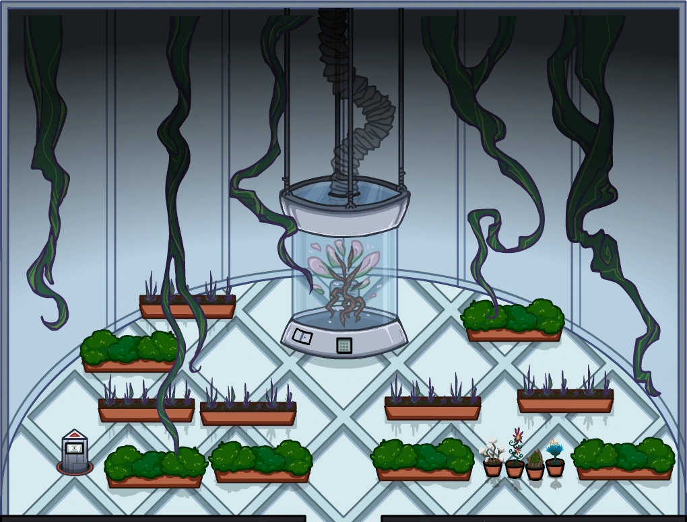

Les Feuilles
Dans cette quête, vous allez devoir nettoyer un espace envahit de feuilles. Pour ce faire, vous devrez attrapper les feuilles 1 par 1 pour les pousser vers l'aspirateur à gauche. Une fois que toutes les feuilles ont disparu, la quête se termine et la barre de complétion des tâches avance !
Le Courant
Tout ce que vous avez à faire est d'actionner l'interrupteur en surbrillance, de le maintenir enfoncé et de le faire glisser vers le haut.
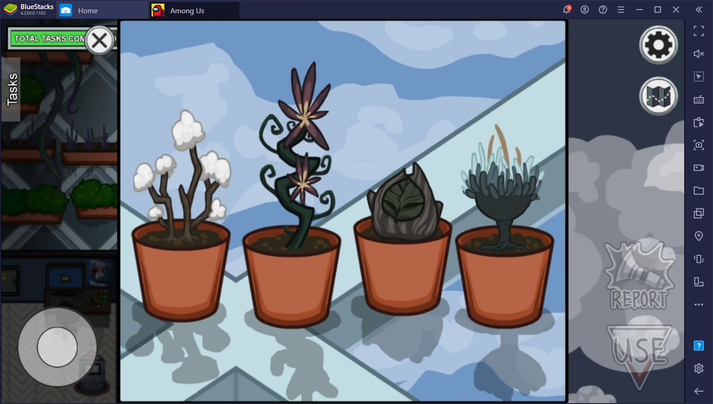
Les Plantes
Après avoir effectué la première partie de cette quête à storage, interagissez avec les plantes en surbrillance. Cliquez sur chacune d’entre elles pour les arroser et ainsi terminer cette tâche.
Quêtes dans Balcony:
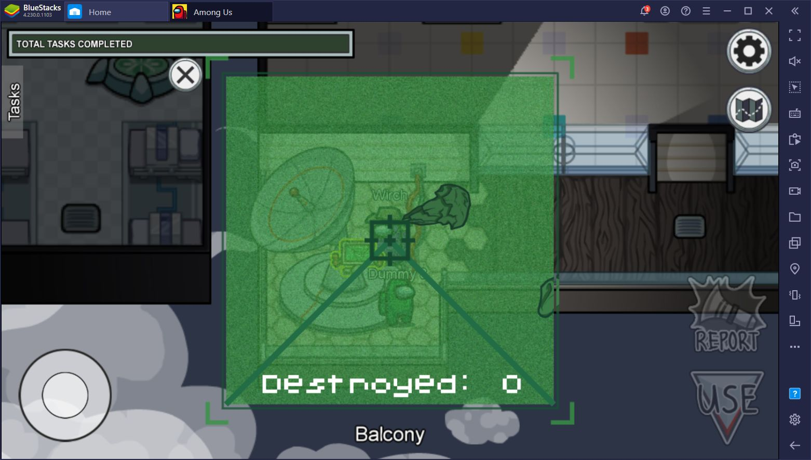
L'Astéroïde
Prenez place à la tourelle et cliquez sur les astéroïdes qui passent sur l’écran pour les détruire. Vous devez en détruire 20 pour terminer cette tâche.
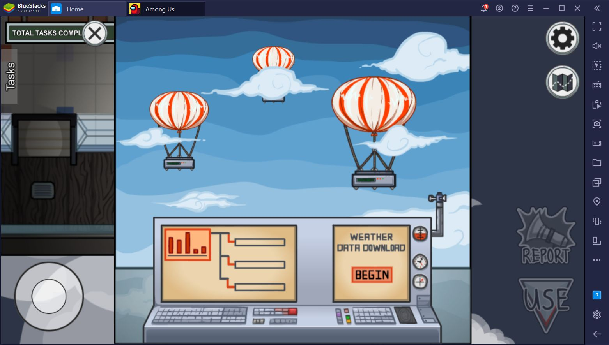
La Météo
Vous devez tout simplement utiliser le panneau de contrôle et lancer le processus d'analyse de la météo. Attendez ensuite 5 secondes pour terminer cette tâche.
Quêtes dans Communication:
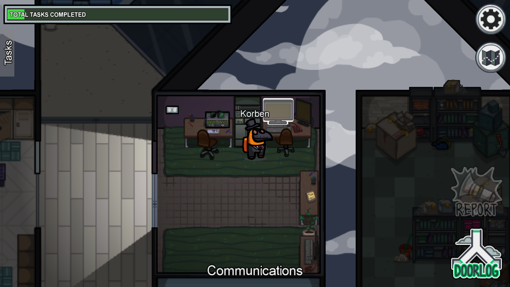
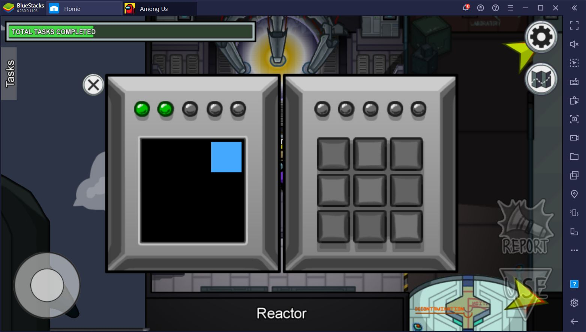
Simon
Cette quête est inspirée du jeu Simon, et vous devrez ici reproduire une séquence de position donnée 5 fois, de plus en plus dure. Si vous ratez une seule position, la quête recommence à 0, donc faites bien attention et concentrez vous ! Si vous réussisez à reproduire les 5 séquences, la quête est validée et la barre de complétion des tâches avance.
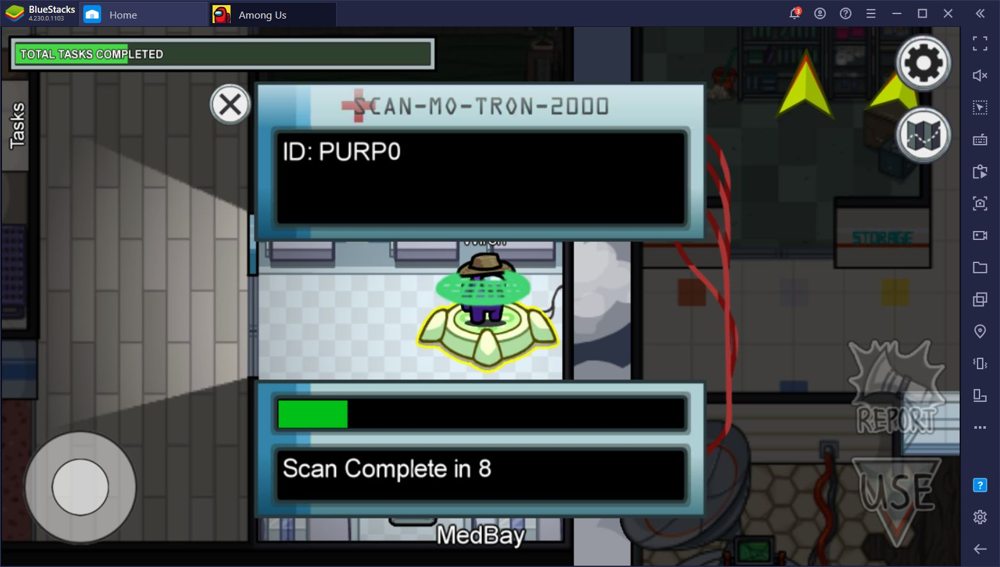
Le Scan
Dans cette quête, vous devez vous faire scanner pendant plusieurs secondes. A la fin du scan, la quête est validée et la barre de complétion des tâches avance.
Le Courant
Interagissez simplement avec le panneau et cliquez sur la barre d'espace pour commencer à exécuter les diagnostics. Après 90 secondes, vous devez revenir au panneau et cliquer sur l'anomalie, représentée par le cercle rouge.